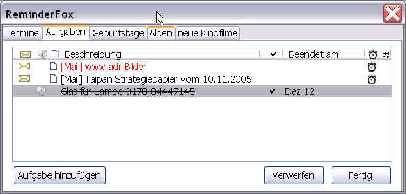

ToDo's/Tasks and Lists/Subscription
ToDo's/Tasks and Lists/Subscription
ToDo's/Tasks and Lists/Subscription
ToDo's/Tasks and Lists/Subscription'Tasks' are events that may have a start and/or end time.
Example: Register for sports course on Monday 10:00 to 12:00 h.
There is a separate tab for 'Tasks'. This task list and its columns are very similar to those of the appointments.
Own task groups can be added as 'Individual Lists'.
See allso FAQ Individuelle Aufgabenlisten
Contents |
Adding a task is the same as adding an appointment. The task basically has
the same options as an appointment.
Unlike appointments, the date is optional here.
Additionally there is the option "Show in tooltip". If this option is selected, the task is displayed
in the tooltip when the mouse pointer is moved to the loop symbol of the status bar.
You can modify ToDo items by right-clicking on them to bring up the context menu. Select the action that you want. Additionally, you can double-click a ToDo to bring up the Edit ToDo dialog.
In addition to appointments and tasks, further lists can be created. These can then be called up via separate tabs.

These lists could include: Movies (with release date), albums (for new releases),
shopping list or whatever can be combined in a list. This is for
people who like to work with lists.
Individual lists are identical to the task list. Thus, all options and settings are the same.
With the context menu entries can be moved within a list as well as to any other list.
The default for lists can be edited in the settings/options under the tab 'Lists'.

The call displays the names of the existing lists. Edit the lists using the buttons:
Note: For 'Subscription' see also FAQ: When to use Subscription?
Subscriptions are displayed within Reminderfox as a special task list. The setup and editing is done -- as with 'Individual lists' -- via "Option: Lists" and the dialog [Add List].

In addition, the "Subscription URL" determines from where the list is subscribed.
As with other individual lists, the subscription can have any name.
Note: Subscription lists have protected fields that cannot be changed.
However, each entry can be moved to appointments or other task/todo lists.
There it is possible to edit the reminder.